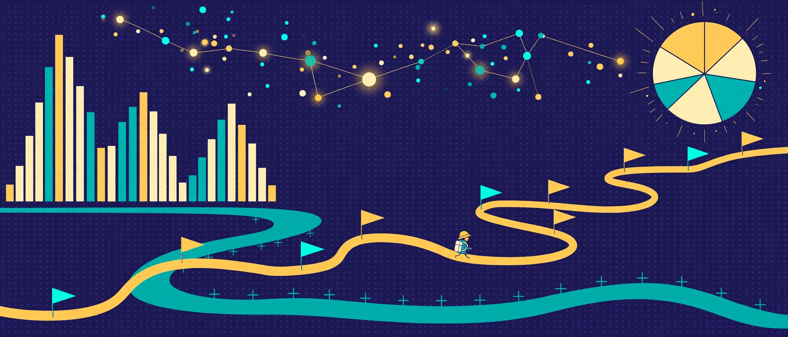

Statistics & Predictive Analytics:
The Statistics Quest
A statistics and prediction quest, played like a game and inspired by the public posts of StatsMania (@statsmaniaofficial). Each episode teaches a core statistics concept in bite-size micro-lessons, then challenges you with checkpoint questions before you can move on. Clear all eight episodes, survive two boss battles, and level up from Stats Cadet to Predictive Analytics Master.

How the quest works
Learn a little, prove it, earn rewards — repeat.
Micro-lessons
Every episode opens with three short, focused lessons — one concept each, with a real business example. No 40-slide decks.
Checkpoint questions
Three questions per episode with instant feedback and explanations — the same style as StatsMania's worked examples — short, with the numbers shown.
XP, stars & badges
Earn XP for every lesson and correct answer, collect a badge per episode, and climb from Stats Cadet to Predictive Analytics Master.
Midterm & Final
The Midterm boss battle guards the trail after Episode 4 (Episodes 1–4); the Final waits at the end after Episode 8 (Episodes 5–8). Both are practice only — nothing here is graded.
Episode map
Clear an episode to unlock the next checkpoint on the trail.
Quest HQ
The big picture behind the game — the episodes, the source, and how practice fits around it.
The episode map
Eight episodes, in the order the ideas build on each other. Play them in sequence — each one unlocks the next. This site is organized by idea, not by week.
- Episode 1 — Describing Data: Centre, Spread & Shape · Foundations
- Episode 2 — Probability: Distributions & Updating Beliefs · Probability
- Episode 3 — Correlation: Measuring Relationships · Correlation
- Episode 4 — Inference: Tests, p-values & Effect Sizes · Inference
- ★ Midterm Boss Battle · Covers Episodes 1–4 — the practice boss battle after Episode 4
- Episode 5 — Regression & Model Fitting · Regression
- Episode 6 — Machine Learning Toolkit · Machine learning
- Episode 7 — Causal Inference & Experiments · Causal inference
- Episode 8 — Forecasting, Visualisation & the Analyst's Job · Applied analytics
- ★ Final Boss Battle · Covers Episodes 5–8 — the practice boss battle after Episode 8
The source: StatsMania
This quest is inspired by the public posts of StatsMania (@statsmaniaofficial) — 129 posts from October–November 2026, tagline "Data science, made simple."
Every lesson here is a paraphrase in our own words, built from the account's worked examples — the delivery times, the coffee bags, the spam filter, the fraud detector, the Nike revenue mystery. Nothing is copied from a caption.
Where the account is thin, we wrote original lessons and say so: mean, median, mode and variance (Episode 1) have no dedicated StatsMania post, and the SQL patterns (Episode 8) get a short original summary.
The big idea
Statistics is how you describe the world honestly; predictive analytics is how you guess what happens next — and know how much to trust the guess.
The journey runs from the first question — what does this data actually look like? — through probability, relationships, inference, regression, machine learning, and causality, to the analyst's job itself: forecasting and explaining why a number moved. Each episode adds one tool; the boss battles ask you to use them together.
Quest facts
- 8 episodes, 3 micro-lessons + 3 checkpoint questions each
- 120 XP per episode — 960 XP in total, stars = checkpoint score
- Play in order; each episode unlocks the next
- No graded work exists for this quest. Nothing here is an exam, a mark, or a course requirement — it is practice, for its own sake.
- Progress lives in your browser session only; nothing is uploaded or stored anywhere
What you'll be able to do
Summarize centre, spread and shape — and know when the mean is lying to you and the median is telling the truth.
Pick the right distribution, read a conditional probability the right way round, and update a belief with Bayes.
Choose the right correlation coefficient for the data in front of you, and spot the traps that make one lie.
Choose a test, read a p-value without fooling yourself, and always ask how big the effect is, not just whether it is significant.
Read a regression summary, fit and evaluate a model, and explain a revenue move with a metric tree.
Tools of the trade
Spreadsheets, SQL, Python/pandas, and dashboards — the tools the source material points to in its learning roadmaps (Sheets → SQL → Dashboards → Decisions). They are the tools the posts suggest for doing this work for real, not a requirement for playing the quest: everything here is playable with a calculator and the lessons themselves.
SQL in one lesson — Episode 8 covers the execution order (FROM first, SELECT fifth) and the nine everyday query patterns, kept short because the source account only brushes SQL.
How practice fits around this site
This site is a practice companion, not a course. There is no syllabus, no instructor, no deadline, and no grade. The two boss battles are practice checkpoints inside the game: they test what you have learned so far, and the only person who sees the result is you.
If you want to go deeper, the source is one tap away: every worked example in these episodes comes from a StatsMania post, and the account keeps posting new ones.
Where it gets tricky — and why that's normal
One 52-minute delivery drags the mean; the median and the IQR don't care. Always ask what the extremes are doing to your summary.
P(music | sports) is 50% and P(sports | music) is 67% — same overlap, different condition. State the condition before you state the number.
A coefficient of 0.98 is a pattern, not a cause. Solar-panel homes sell for $80K more, but only $25K of that is the panels.
With 5,000 orders per system, a 6-second difference can be "significant". Always ask for the effect size next to the p-value.
A fraud detector that flags nothing is 99% accurate and catches zero fraud. Precision and recall tell the honest story.
Meet the statistics crew
Dr. K hosts the quest, but each episode has a character who will try to trip you up — in a friendly way. Learn their names and you'll remember their lessons.
Episode 1 — maps centre, spread and shape, and never lets an outlier boss the average around.
Episode 2 — deals out distributions and updates beliefs like a card sharp with a prior.
Episode 3 — measures how two variables move together, and warns you when the number lies.
Episode 4 — reads p-values without fooling herself, and always asks how big the effect is.
Episode 5 — reads a full OLS summary and turns a spam score into a probability.
Episode 6 — opens the machine learning toolkit and trains honestly, or not at all.
Episode 7 — separates real causes from lucky correlations, one experiment at a time.
Episode 8 — forecasts tomorrow and traces a revenue drop to its branch on the metric tree.
Playing fair: AI & practice honesty
AI is welcome as learning support here: explanations, study help, extra practice examples, brainstorming. But the checkpoint questions only teach you anything if you answer them yourself first — looking up or generating the answer skips the learning the quest exists for. StatsMania's own rule from its roadmaps applies here too: use AI to draft, verify it yourself — "AI ASSIST / YOUR CHECK".
There is nothing to hand in and nobody to fool, so the honest move is also the easy one: play it straight, check the work, and explain the result in your own words.